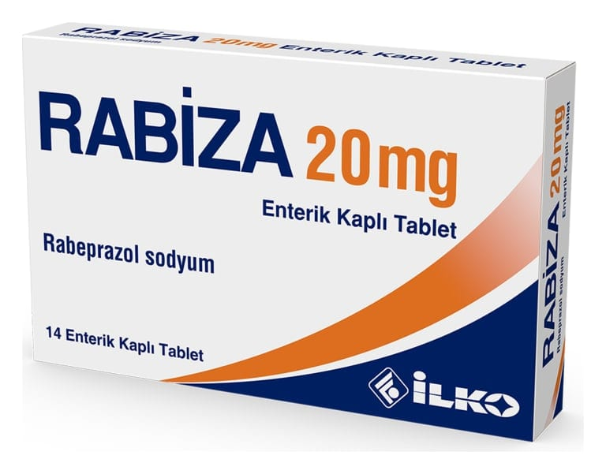

Rabiza 20 mg Enterik Kaplı Tablet, 14 Adet

Ne için kullanılır
KT · Bölüm 1• RABİZA, özel geciktirilmiş salımlı enterik formülasyonu sayesinde, midede parçalanmaksızın bağırsaklara geçen ve burada emilen her iki yüzü düz, sarı, yuvarlak, bikonveks, enterik kaplı tablettir. Her bir enterik kaplı tablet, 18.85 miligram rabeprazole eşdeğer, 20 miligram rabeprazol sodyum içerir. RABİZA, Aluminyum/aluminyum blister ambalaj içerisinde 14 ve 28 tablet içeren karton kutu şeklinde piyasaya sunulmaktadır. • RABİZA’nın etkin maddesi olan rabeprazol sodyum, Proton Pompası İnhibitörleri adı verilen bir ilaç sınıfında yer almaktadır. Bu sınıftaki ilaçlar, mide asidi salgılanmasında önemli bir yeri olan ve midedeki bazı özel hücrelerde bulunan proton pompası denilen sistemin çalışmasını engelleyerek, mide asidinin azalmasını sağlarlar. Mide asidinin azalması, mide, bağırsak ve yemek borusunda bulunan ülserlerin (peptik ülser) iyileşmesini ve a ğrının giderilmesini sağlar.
• RABİZA, aktif duodenum (on iki parmak bağırsağı) ülseri, aktif selim mide ülseri, semptomatik erozif ya da ülseratif gastroözofajiyal reflü hastalığı (GÖRH) tanısı konulmuş hastaların tedavisinde kullanılmaktadır. GÖRH, mide sıvısının anormal bir şekilde üstteki yemek borusuna geçmesi ve burayı aşındırması veya ülserlere yol açması ile ortaya çıkan bir hastalıktır. RABİZA aynı zamanda, gastroözofajiyal reflü hastalığının uzun dönemli tedavisi için (GÖRH idame), orta derecede ile çok şiddetli gastroözofajiyal reflü hastalığının belirtilerinin giderilmesi için ve mide asidinin sürekli olarak çok miktarlarda bulunduğu bir hastalık tablosu olan Zollinger-Ellison Sendromu’nda da kullanılır.
RABİZA ayrıca, uygun antibiyotik ilaçlar ile kombinasyon şeklinde, mide ülseri oluşumunda rol oynayan bir bakteri olan Helicobacter pylori’nin eradikasyonu (ortadan kaldırılması) için de kullanılmaktadır.